Anime Scenes
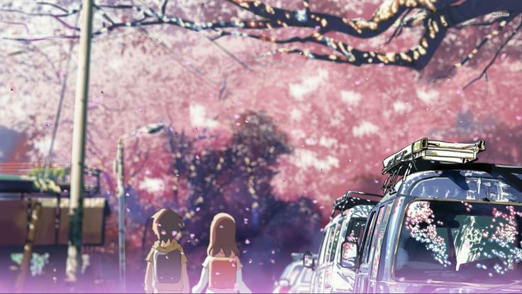
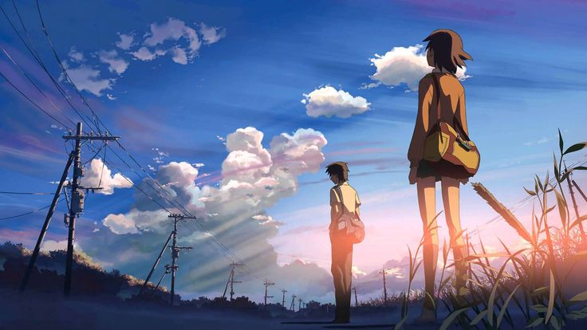
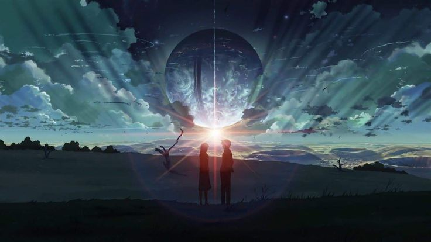
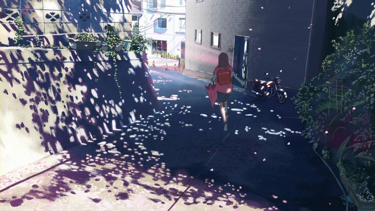
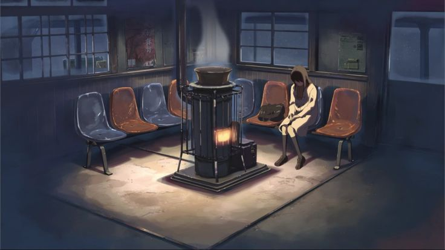
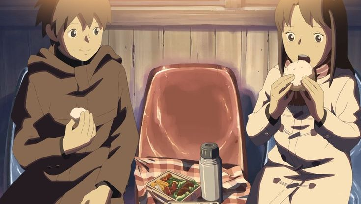
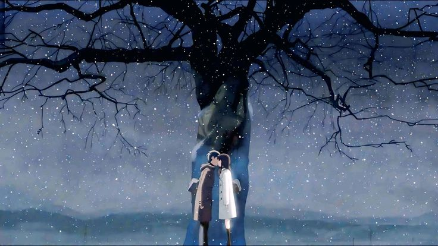
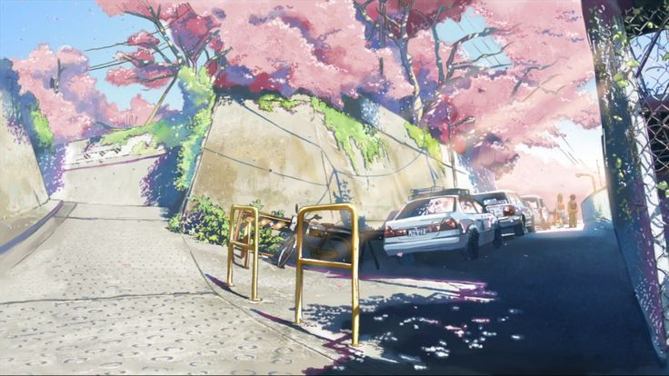
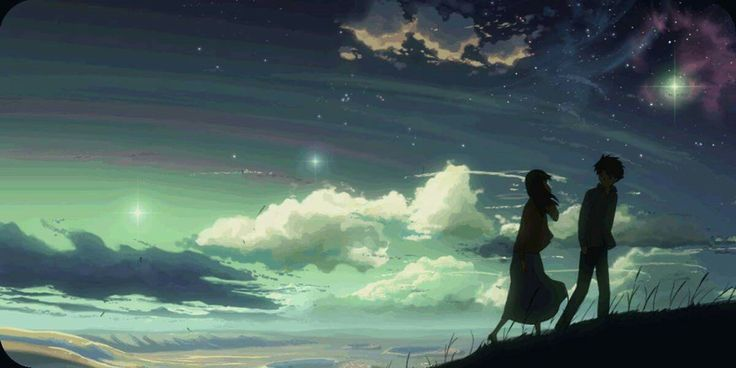
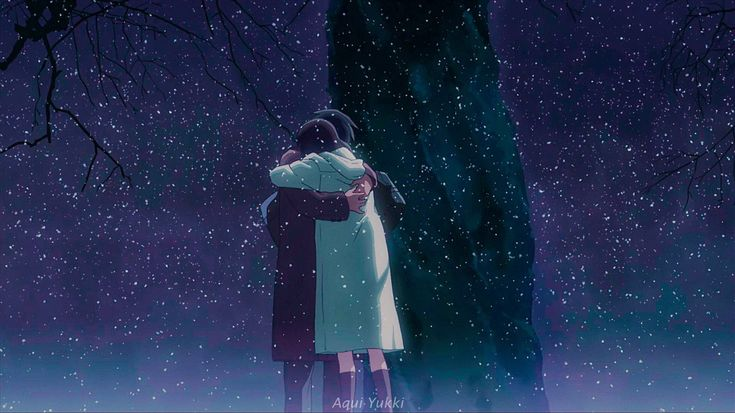
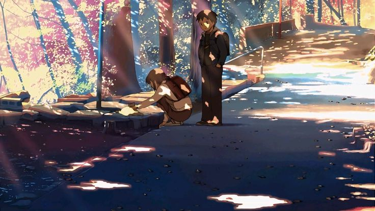
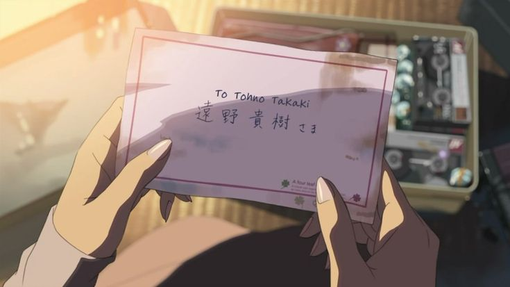
“The hardest part of love is not being able to be with the one you love.”
Anime Studio: CoMix Wave Films
Director: Makoto Shinkai
Producer: Genki Kawamura
Distributor: Toho
Rating: ★ 7.6 / 10
Source: Original Story
Release Date: March 3, 2007
Duration: 1 hour 3 minutes
Music by: Tenmon
Genres: Romance, Drama
Country: Japan
Language: Japanese
Box Office: ~$20 million
Awards: Lancia Platinum Grand Prize